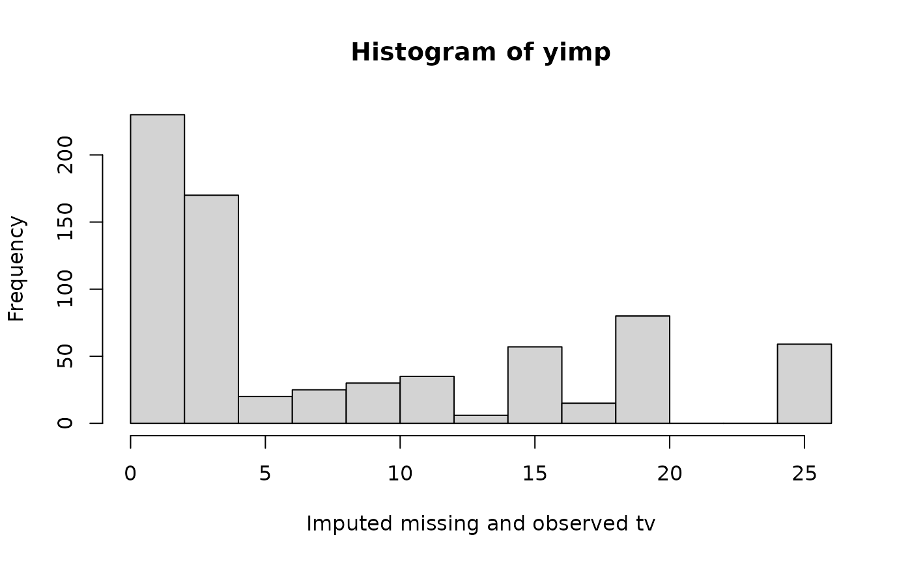
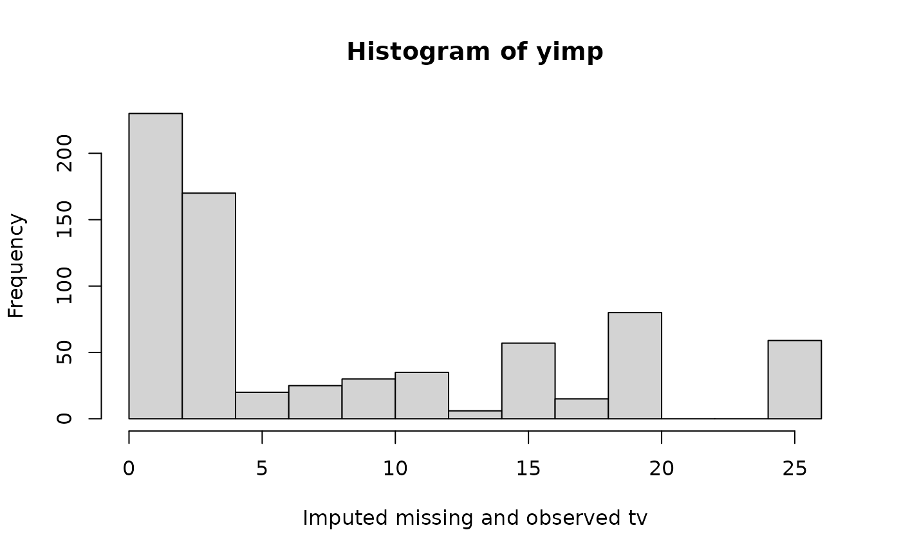

Imputation by predictive mean matching
Usage
mice.impute.pmm(
y,
ry,
x,
wy = NULL,
donors = 5L,
matchtype = 1L,
ridge = 1e-05,
use.matcher = FALSE,
...
)Arguments
- y
Vector to be imputed
- ry
Logical vector of length
length(y)indicating the the subsety[ry]of elements inyto which the imputation model is fitted. Therygenerally distinguishes the observed (TRUE) and missing values (FALSE) iny.- x
Numeric design matrix with
length(y)rows with predictors fory. Matrixxmay have no missing values.- wy
Logical vector of length
length(y). ATRUEvalue indicates locations inyfor which imputations are created.- donors
The size of the donor pool among which a draw is made. The default is
donors = 5L. Settingdonors = 1Lalways selects the closest match, but is not recommended. Values between 3L and 10L provide the best results in most cases (Morris et al, 2015).- matchtype
Type of matching distance. The default choice (
matchtype = 1L) calculates the distance between the predicted value ofyobsand the drawn values ofymis(called type-1 matching). Other choices arematchtype = 0L(distance between predicted values) andmatchtype = 2L(distance between drawn values).- ridge
The ridge penalty used in
.norm.draw()to prevent problems with multicollinearity. The default isridge = 1e-05, which means that 0.01 percent of the diagonal is added to the cross-product. Larger ridges may result in more biased estimates. For highly noisy data (e.g. many junk variables), setridge = 1e-06or even lower to reduce bias. For highly collinear data, setridge = 1e-04or higher.- use.matcher
Logical. Set
use.matcher = TRUEto specify the C functionmatcher(), the now deprecated matching function that was default in versions2.22(June 2014) to3.11.7(Oct 2020). Since version3.12.0mice()uses the much fastermatchindexC function. Use the deprecatedmatcherfunction only for exact reproduction.- ...
Other named arguments.
Details
Imputation of y by predictive mean matching, based on
van Buuren (2012, p. 73). The procedure is as follows:
Calculate the cross-product matrix \(S=X_{obs}'X_{obs}\).
Calculate \(V = (S+{diag}(S)\kappa)^{-1}\), with some small ridge parameter \(\kappa\).
Calculate regression weights \(\hat\beta = VX_{obs}'y_{obs}.\)
Draw \(q\) independent \(N(0,1)\) variates in vector \(\dot z_1\).
Calculate \(V^{1/2}\) by Cholesky decomposition.
Calculate \(\dot\beta = \hat\beta + \dot\sigma\dot z_1 V^{1/2}\).
Calculate \(\dot\eta(i,j)=|X_{{obs},[i]|}\hat\beta-X_{{mis},[j]}\dot\beta\) with \(i=1,\dots,n_1\) and \(j=1,\dots,n_0\).
Construct \(n_0\) sets \(Z_j\), each containing \(d\) candidate donors, from Y_obs such that \(\sum_d\dot\eta(i,j)\) is minimum for all \(j=1,\dots,n_0\). Break ties randomly.
Draw one donor \(i_j\) from \(Z_j\) randomly for \(j=1,\dots,n_0\).
Calculate imputations \(\dot y_j = y_{i_j}\) for \(j=1,\dots,n_0\).
The name predictive mean matching was proposed by Little (1988).
References
Little, R.J.A. (1988), Missing data adjustments in large surveys (with discussion), Journal of Business Economics and Statistics, 6, 287--301.
Morris TP, White IR, Royston P (2015). Tuning multiple imputation by predictive mean matching and local residual draws. BMC Med Res Methodol. ;14:75.
Van Buuren, S. (2018). Flexible Imputation of Missing Data. Second Edition. Chapman & Hall/CRC. Boca Raton, FL.
Van Buuren, S., Groothuis-Oudshoorn, K. (2011). mice: Multivariate
Imputation by Chained Equations in R. Journal of Statistical
Software, 45(3), 1-67. doi:10.18637/jss.v045.i03
See also
Other univariate imputation functions:
mice.impute.cart(),
mice.impute.lasso.logreg(),
mice.impute.lasso.norm(),
mice.impute.lasso.select.logreg(),
mice.impute.lasso.select.norm(),
mice.impute.lda(),
mice.impute.logreg.boot(),
mice.impute.logreg(),
mice.impute.mean(),
mice.impute.midastouch(),
mice.impute.mnar.logreg(),
mice.impute.mpmm(),
mice.impute.norm.boot(),
mice.impute.norm.nob(),
mice.impute.norm.predict(),
mice.impute.norm(),
mice.impute.polr(),
mice.impute.polyreg(),
mice.impute.quadratic(),
mice.impute.rf(),
mice.impute.ri()
Examples
# We normally call mice.impute.pmm() from within mice()
# But we may call it directly as follows (not recommended)
set.seed(53177)
xname <- c("age", "hgt", "wgt")
r <- stats::complete.cases(boys[, xname])
x <- boys[r, xname]
y <- boys[r, "tv"]
ry <- !is.na(y)
table(ry)
#> ry
#> FALSE TRUE
#> 503 224
# percentage of missing data in tv
sum(!ry) / length(ry)
#> [1] 0.6918845
# Impute missing tv data
yimp <- mice.impute.pmm(y, ry, x)
length(yimp)
#> [1] 503
hist(yimp, xlab = "Imputed missing tv")
 # Impute all tv data
yimp <- mice.impute.pmm(y, ry, x, wy = rep(TRUE, length(y)))
length(yimp)
#> [1] 727
hist(yimp, xlab = "Imputed missing and observed tv")

plot(jitter(y), jitter(yimp),
main = "Predictive mean matching on age, height and weight",
xlab = "Observed tv (n = 224)",
ylab = "Imputed tv (n = 224)"
)
abline(0, 1)
# Impute all tv data
yimp <- mice.impute.pmm(y, ry, x, wy = rep(TRUE, length(y)))
length(yimp)
#> [1] 727
hist(yimp, xlab = "Imputed missing and observed tv")

plot(jitter(y), jitter(yimp),
main = "Predictive mean matching on age, height and weight",
xlab = "Observed tv (n = 224)",
ylab = "Imputed tv (n = 224)"
)
abline(0, 1)
 cor(y, yimp, use = "pair")
#> [1] 0.7415001
cor(y, yimp, use = "pair")
#> [1] 0.7415001